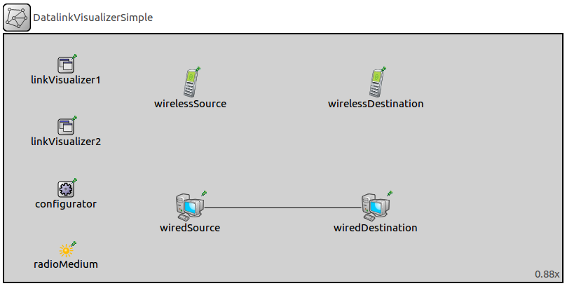
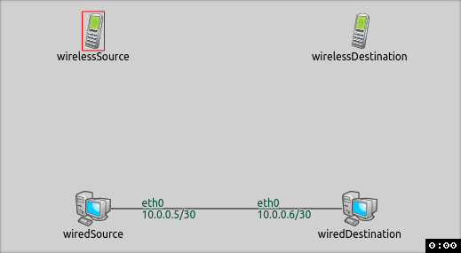
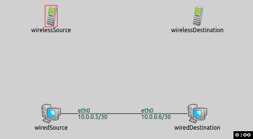
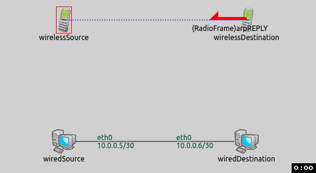

Visualizing data links is useful, because based on this we can determine the second layer links in the network. It is especially helpful in wireless networks, because we can see which devices communicate with each other. In wired networks it is also advantageous, e.g if a packet doesn't reach the destination node. In this case we can see at a glance where the communication is jammed.
The example consists of 3 simulation models, each demonstrating different features of physical link visualization.
The datalinkVisualizer keeps track of active data links in a network.
A link becomes active between two nodes when a packet arrives at the receiver node's data link layer from the source node's data link layer.
By default links are not displayed, we can enable their visualization by switching the displayLinks parameter to true.
The links are represented visually by solid arrows. The arrow's starting point is the sender node and its endpoint is the receiver node. The visualizer has filtering parameters, like nodeFilter, interfaceFilter and packetFilter. Using these we can specify which data links are shown. By default all nodes, all interfaces and all packets are considered for displaying data links. It is possible to use logical expressions as the filter's parameter, e.g packetFilter = "ping* or tcp*" shows the ping and the tcp data links.
In this configuration we show how to enable the visualization. We will see the default look of the visualization.
For this configuration the network contains two wireless nodes (AdhocHost), two wired hosts (StandardHost). Besides these nodes, the network has an IPv4NetworkConfigurator, an Ieee80211ScalarRadioMedium and a DataLinkVisualizer module.
The network will not change in the other configurations.

The wirelessSource pings the wirelessDestination, the wiredSource pings the wiredDestination.
The configuration is really simple.
It consists of one line which enables the DatalinkVisualizer with the displayLinks parameter.
We don't set any other parameters, we use the visualizer's default options.
When we start the simulation, here is what happens:

The communication starts between the nodes. When a message reaches its destination's data link layer, the data link is activated between the nodes and an arrow is shown from the sender towards the receiver. Then the arrows fade out in real time.
This configuration demonstrates the datalinkVisualizer's filtering function.
Our goal is visualize only the filtered data links.
We set packetFilter parameter to ping* and not *reply* to customize the showed data links. The source sends ping messages per second. To see better the ping echos we set the fadeOutMode to simulationTime and we adjust the fadeOutTime to 1.5s. With these settings the arrow will not completely disappear and the sample will be more understandable.
The following animation shows what happens when we start the simulation:

Altough the data link is activated between the nodes, an arrow is shown from the sender towards the receiver only, if the packet is a ping echo message. The arrows fade out in simulation time, but don't disappear completely, because the next ping message is sent within a second.

This example only demonstrated the key features of datalink visualization. For more information, refer to the
DataLinkVisualizer NED documentation.